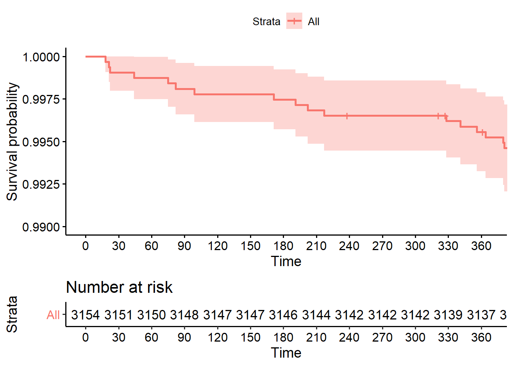
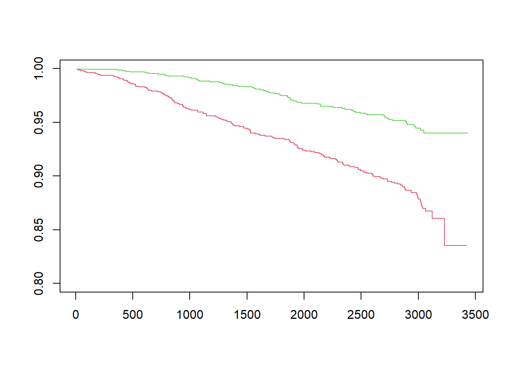

Chapter 2 Lifunargreining
Í þessum kafla munun við styðjast við Western Collaborative Group Study (WCGS) gagnasafnið sem er í epitools- pakkanum. Þetta eru gögn úr rannsókn þar sem meginmarkmið hennar var að skoða tengsl persónuleikagerðar og hjartasjúkdóma og því eru hjartasjúkdómar aðalútkomubreytan okkar. Viðfangsefnin voru 3154 karlmenn á aldrinum 39 - 59 ára, þeim var fylgt eftir í allt að 10 ár þangað til þeir fengu hjartasjúkdóm, eða létust, eða þeir urðu 70 ára eða eftirfylgni lauk af öðrum ástæðum. Viðfangsefnin komu inn í rannsóknina á árunum 1960-1961.
Við ætlum að skoða áhrif mismunandi persónuleikagerða A og B á hjartaáföll með og án skýribreytna. A og B flokkunin vísar í hvernig fólk meðhöndlar streitu og álag. Þeir sem eru í A hópi eru með meira keppnisskap, óþolinmóðari og árásagjarnari en þeir sem eru í hópi B. Þær skýribreytur sem við munum skoða eru aldur, magn kólesteról í blóði, blóðþrýstings, reykinga og BMI stuðull.
2.1 Skoðun lifunargagna
2.1.1 Sækjum gögnin og lögum til
data(wcgs,package = "epitools")
wcgs <- as_tibble(wcgs)
wcgs <- wcgs %>%
mutate(surv_time_y = time169 / 365.24,
agec = age0 - 46,
cholmmol = chol0 / 39,
sbp10 = sbp0 / 10,
dibpat = factor(dibpat0, levels = 0:1, labels = c("B", "A")),
smoker = factor(1 * (ncigs0 > 0), levels = c(0, 1), labels = c("No", "Yes")),
bmi = ((weight0 * 2.54) / 100) / (height0 * 2.54)^2,
bmiq3 = cut(bmi, breaks = quantile(bmi, seq(0, 1, 1/3)),
include.lowest = T, right = F)
)
wcgs_dat <- wcgs %>%
select(id, surv_time = time169, surv_time_y, status=chd69, agec, cholmmol, sbp10, smoker, dibpat, bmi,bmiq3, arcus0) %>%
filter(complete.cases(.)) %>% mutate(statusf=factor(status,levels=0:1,labels = c("No event","Yes event")))
wcgs_dat$dibpat <- relevel(wcgs_dat$dibpat, "A")Tíminn time169 er í dögum en við reiknum nýja breytu sem mælir tímann í árum.
Við búum til nýja aldursbreytu þar sem við erum búin að staðla hana m.v. meðaldurinn í hópnum. Meðalaldurinn er 46.28 og drögum við þvi 46 frá aldrinum. Það mun auðvelda túlkun á líkönum.
!!! ATH af hverju deilum við með 10 og 39?.
Breytan dibpat0 eru persónuleikagerðirnar, við setjum hana sem flokkabreytu (e. factor).
Við skilgreinum reykingamann þann sem reykir amk 1 sígaréttu á dag og höfum breytuna sem flokkabreytu.
Til þess að reikna BMI þá þurfum við að breyta hæðinni í metra og þyngdinni í kíló. Útbúum einnig flokkabretytu fyrir bmi þar sem við skiptum henni í 3 jafna hluta.
Breytan chd69 segir til um hvort karlmennirnir fengu hjartasjúkdóm eða ekki og setjum við hana því sem “status”, það hvort atburður hafi átt sér stað eða ekki er oft kallað “status”.
Við notum bara þá einstaklinga sem hafa allar breyturnar sem við ætlum að skoða, aðra fjarlægjum við úr gagnasafninu.
2.1.2 Tökum létta skoðun á gögnunum
Fyrsta skrefið er alltaf að skoða gögnin og sjá hvað einfaldur reikningur gefur okkur. Við skoðum gögnin miða við ár sem tímalengd.
Helstu tölur
# Hversu margir eru í safninu og í hvorum hópi fyrir sig?
rownames <- c("Allir", "A", "B")
fj_t <- dim(wcgs_dat)[1]
fj_g <- wcgs_dat %>%
group_by(dibpat) %>%
count()
fj <- rbind(fj_t,fj_g[[1,2]],fj_g[[2,2]])
# Hversu margir fengu hjartaáfall í heildina og í hvorum hópi fyrir sig?
st_t <- sum(wcgs_dat$status)
st_g <- wcgs_dat %>%
group_by(dibpat) %>%
summarise(tidni = sum(status))## `summarise()` ungrouping output (override with `.groups` argument)st <- rbind(st_t,st_g[[1,2]],st_g[[2,2]])
# Hver er eftirfylgnitíminn og lambda fyrir all hópana?
ef_t <- wcgs_dat %>%
summarise(sum_time = sum(surv_time_y),lambda = sum(status) / sum(surv_time_y))
ef_g <- wcgs_lambda <- wcgs_dat %>%
group_by(dibpat) %>%
summarise(sum_time = sum(surv_time_y),lambda = sum(status) / sum(surv_time_y))## `summarise()` ungrouping output (override with `.groups` argument)ef <- rbind(round(ef_t[[1]],2), round(ef_g[[1,2]],2), round(ef_g[[2,2]],2))
lambda <- rbind(round(ef_t[[2]],4), round(ef_g[[1,3]],4), round(ef_g[[2,3]],4))
# Setjum í eina töflu
stats <- as_tibble(cbind(rownames,fj,st,ef,lambda))## Warning: The `x` argument of `as_tibble.matrix()` must have column names if `.name_repair` is omitted as of tibble 2.0.0.
## Using compatibility `.name_repair`.
## This warning is displayed once every 8 hours.
## Call `lifecycle::last_warnings()` to see where this warning was generated.# !!! ATH betra útlit
stats <-stats %>% rename( Hópar= rownames, Heildarfjöldi = V2, Tilfelli = V3, Eftirfylgnitími = V4, lambda = V5)
stats## # A tibble: 3 x 5
## Hópar Heildarfjöldi Tilfelli Eftirfylgnitími lambda
## <chr> <chr> <chr> <chr> <chr>
## 1 Allir 3140 255 23072.54 0.0111
## 2 A 1583 177 11330.47 0.0156
## 3 B 1557 78 11742.07 0.0066Eftirfylgnitíminn er sá tími sem einstaklingur er í rannsókninni, hámark 10 ár í þessari rannsókn. Lambda er fjöldi atburða á tímaeiningu, í þessu tilfelli er það eitt ár. Svo 0.0111 eða 1.11 % er eins árs meðaláhætta fyrir heildarhópinn.
Áhættuhlutfallið Áhættuhlutfallið er hlutfallið af líkunum á því að atburðurinn gerist í meðferðarhópnum á móti líkunum á því að atburðurinn gerist í viðmiðunarhópnum. Við lítum á persónuleikagerð A sem meðferðarhópinn og persónuleikagerð B sem viðmiðunarhópinn.
Áhættuhlutfallið er 0.43 og því er einstaklingur með persónuleikagerð A í -57% meiri áhættu til að fá hjartaáfall ef allir aðrir þættir eru eins.
Af þessum gildum höfum við mestan áhuga áhættunni (þ.e. lambda) fyrir hvora persónuleikagerð fyrir sig og áhættuhlutfallinu. Fallið \(flexsurvreg\) úr pakkanum \(flexsurv\) hentar vel til þess að reikna það. Einnig notum við fallið \(Surv\) úr pakkanum \(survival\).
Fallið \(Surv\) er notað til að útbúa breytu af gerðinni lifunarhlutur (e. survival object). Það tekur inn í sig tvær breytur; annars vegar hversu langur tími leið fram að atburði eða skerðingu og hins vegar hvort atburður eða skerðing átti stað á þeim tímapunkti. Þeir sem hafa ekki fengið hjartaáfall eru með skerðingu.
Líkanið sem við köllum VL_O er notað til að reikna lambda fyrir allan hópinn en VL_1 til þess að reikna lambda fyrir hópa A og B.
VL_0 <- flexsurvreg(Surv(surv_time_y, status) ~ 1,data=wcgs_dat,dist="exponential")
VL_1 <- flexsurvreg(Surv(surv_time_y, status) ~ dibpat,data=wcgs_dat,dist="exponential")
lambda_0 <- VL_0$res[1,1]
lambda_a <- VL_1$res[1,1]
lambda_b <- exp(VL_1$res[2,1]+log(VL_1$res[1,1]))
lambda_2 <- rbind(round(lambda_0,4), round(lambda_a,4), round(lambda_b,4))
# Setjum í eina töflu
stats2 <- as_tibble(cbind(rownames, lambda, lambda_2))
# !!! ATH betra útlit
stats2 <- stats2 %>% rename( Hópar= rownames, Lambda_handreiknað = V2, Lambda_með_falli = V3)
stats2## # A tibble: 3 x 3
## Hópar Lambda_handreiknað Lambda_með_falli
## <chr> <chr> <chr>
## 1 Allir 0.0111 0.0111
## 2 A 0.0156 0.0156
## 3 B 0.0066 0.0066Getum líka reiknað áhættuhlutfallið
Áhættuhlutfallið er 0.43 sem er það sama og við fengum með handreikningi.
2.1.3 Veldisvísisfallið
Ef við gerum ráð fyrir veldisvísivexti þá er hægt að meta t.d. 5 ára áhættu fyrir hvorn hóp. Athugið að hér erum við að gera ráð fyrir að áhættan í sérhverjum hópi haldist óbreytt út tímabilið.
Við notum formúluna \(1-e^{-\lambda*ár}\).
ar <- 5 # Hægt að velja hvaða árafjölda sem er, svo lengi sem hann er innan tímalengdar rannsóknar
VL_0_ahaetta <- 1-exp(-lambda_0*ar)
VL_A_ahaetta <- 1-exp(-lambda_a*ar)
VL_B_ahaetta <- 1-exp(-lambda_b*ar)
ar_ahaetta <- rbind(round(VL_0_ahaetta,4), round(VL_A_ahaetta,4), round(VL_B_ahaetta,4))
stats3 <- as_tibble(cbind(rownames,fj,st,ef,lambda_2,ar_ahaetta))
# !!! ATH betra útlit
stats3 <- stats3 %>% rename( Hópar= rownames, Heildarfjöldi = V2, Tilfelli = V3, Eftirfylgnitími = V4, lambda = V5, áhætta5ár = V6)
stats3## # A tibble: 3 x 6
## Hópar Heildarfjöldi Tilfelli Eftirfylgnitími lambda áhætta5ár
## <chr> <chr> <chr> <chr> <chr> <chr>
## 1 Allir 3140 255 23072.54 0.0111 0.0538
## 2 A 1583 177 11330.47 0.0156 0.0751
## 3 B 1557 78 11742.07 0.0066 0.03272.2 Kaplan Meier
2.2.1 Kaplan Meier metilinn
Næst skoðum við Kaplan Meier metilinn en hann er ein langmest notaða tölfræðiaðferðin þegar framkvæmd er lifunargreining, meðal annars vegna þess að á honum byggja svo kölluð Kaplan-Meier gröf sem eru ein algengasta leiðin til að lýsa lifunargögnum.
Fyrst skulum við kynna til sögunnar svokallað lifunarfall (e. survival curve). Lifunarfallið er yfirleitt táknað með \(S(t)\) og túlkun fallsins er svohljóðandi
\[ S(t) = \text{Líkur þess að einstaklingur fá ekki atburð fram að tíma $t$.} \]
Lifunarfallið miðar alltaf við einhvern tiltekinn atburð. Oft er sá atburður dauði, en hann er einnig mjög oft eitthvað annað eins og til dæmis greining á sjúkdómi. Lifunarfallið gefur okkur þá líkurnar á því að hafa ekki fengið sjúkdóm innan tiltekins tíma.
Í okkar tilfelli væri \(S(5)\) líkur þess að einstaklingur fái ekki hjartasjúkdóm innan 5 ára. Ef ekki væri fyrir skerðingu væri lítill vandi að meta hvert það gildi væri, sem við samkvæmt venju köllum \(\hat S(5)\). Besta matið á \(\hat S(5)\) væri einfaldlega fjöldi þeirra sem fengu hjartasjúkdóm innan 5 ára af allri heildinni. En skerðingarinnar vegna vandast málin.
Kaplan Meier metilinn er stærðfræðileg regla til að meta \(\hat S(t)\). Hann er metinn á sérhverjum tímapunkti þegar atburður á sér stað (en ekki skerðing). Í gögnunum okkar fengu 257 karlmenn hjartasjúkdóm svo þessir tímapunktar eru að hámarki 257. Við nánari athugun reynast stundum fleiri en einn karlmaður fá hjartasjúkdóm eftir jafnlangan tíma svo tímapunktarnir eru alls 248. Ef við gefum þeim heiti eftir stærðarröð þeirra, \(t_1, \ldots , t_{248}\), þá væri:
- \(t_1 =\) 18, sem er sá tímapunktur þegar fyrsti maðurinn fékk hjartasjúkdóm,
- \(t_2 =\) 21 væri sá tímapunktur þegar næsti maður fékk hjartasjúkdóm
- \(t_{248} =\) 3229, væri að lokum sá tímapunktur þegar síðasti maðurinn fékk hjartasjúkdóm.
Kaplan Meier metilinn er metinn á sérhverjum þessara 248 tímapunkta. Formúla metilsins er
\[ \hat S(t) = \Pi_{i=1}^k \left( 1- \frac{d_i}{n_i} \right)\]
þar sem \(d_i\) táknar fjölda þeirra sem fengu atburðinn á tímapunkti \(i\) en \(n_i\) er fjöldi þeirra sem er enn í áhættu að fá atburðinn á tímapunkti \(i\), þ.e.a.s. hafa hvorki fengið atburðinn, né verið skertir.
Í fyrsta tímapunktinum er Kaplan Meier metillinn hreinlega hlutfall þeirra sem ekki var kominn með hjartasjúkdóm af þeim sem ekki voru orðnir skertir á þeim tímapunkti (þ.e.a.s. af þeim sem voru enn í eftirfylgd). Fyrir næsta tímapunkt þarf að reikna einn mínus hlutfall fjölda þeirra sem fékk hjartasjúkdóm á þeim tímapunkti af þeim sem enn voru í eftirfylgd á þeim tímapunkti og margfalda það gildi við síðasta reiknaða Kaplan-Meier gildið. Þannig er haldið áfram koll af kolli fyrir alla tímapunktana. Athugið að Kaplan Meier matið er eingöngu metið á þeim tímapunktum þegar atburður á sér stað. Ef við viljum meta lifunarfallið á tímapunktum sem lenda á milli þessara gilda notum við Kaplan-Meier matið fyrir næsta tímapunkt á undan.
Notum aðferð Kaplan Meier til að meta 5 ára áhættu á hjartasjúkdómi hjá öllum annars vegar og hópunum tveimur hins vegar. Notum fallið \(survfit\) úr pakkanum \(survival\).
# Allur hópurinn
KM_0 <- survfit(Surv(surv_time_y, status) ~ 1, data = wcgs_dat)
KM_0_sum_1 <- summary(KM_0, times = 1) # times = 1 fyrir 1 ár
KM_0_1 <- 1 - KM_0_sum_1$surv
KM_0_sum_5 <- summary(KM_0, times = 5) # times = 5 fyrir 5 ár
KM_0_5 <- 1 - KM_0_sum_5$surv
# Persónuleikagerð A og B
KM_1 <- survfit(Surv(surv_time_y, status) ~ dibpat, data = wcgs_dat)
KM_1_sum_1 <- summary(KM_1, times = 1) # times = 1 fyrir 1 ár
KM_1_1 <- 1 - KM_1_sum_1$surv
KM_1_sum_5 <- summary(KM_1, times = 5) # times = 5 fyrir 5 ár
KM_1_5 <- 1 - KM_1_sum_5$surv
ahaetta_1 <- rbind(round(KM_0_1,4), round(KM_1_1[1] ,4), round(KM_1_1[2], 4))
ahaetta_5 <- rbind(round(KM_0_5,4), round(KM_1_5[1] ,4), round(KM_1_5[2], 4))
# Setjum upp í töflu og berum saman við fyrri niðurstöður.
stats4 <- as_tibble(cbind(rownames,lambda_2,ar_ahaetta, ahaetta_1, ahaetta_5))
# !!! ATH betra útlit
#stats4 <- stats4 %>% rename( Hópar= rownames, Heildarfjöldi = V2, Tilfelli = V3, Eftirfylgnitími = V4, lambda = V5, áhætta5ár = V6)
stats4## # A tibble: 3 x 5
## rownames V2 V3 V4 V5
## <chr> <chr> <chr> <chr> <chr>
## 1 Allir 0.0111 0.0538 0.0048 0.0455
## 2 A 0.0156 0.0751 0.0082 0.0656
## 3 B 0.0066 0.0327 0.0013 0.0253Getum líka hugsað þetta út frá lifun, ef við skoðun KM_1_sum_5 þá sést að 5 ára lifun fyrir A hópinn er 0.9344 og öryggisbilið er (0.9221,0.947) og 5 ára lifun fyrir B hópinn er 0.9747 og öryggisbilið er (0.9668,0.9827).
!!! ATH mjög ólíkar tölur milli veldisvísisfallsins og KM, hvernig er best að skýra það?
2.2.2 Kaplan Meier gröf
Kaplan Meier gröf eru langalgengasta myndræna framsetningin á lifunargögnum. Þau eru leið til að lýsa lifunarfallinu myndrænt, þ.e.a.s. hversu hátt hlutfall þátttakanda hefur ekki fengið atburð eftir því sem tíminn líður. Gröfin teikna Kaplan Meier matið í sérhverjum tímapunkti og flatar línur milli punktanna. Gröfin eru látin “falla” á þeim tímapunktum sem atburðir eiga sér stað í samræmi við það hvernig matið er reiknað. Til þessa að teikna lifunarföllin þá notum við fallið \(ggsurvplot\) úr \(survminer\).
Skoðum fyrst Kaplan-Meier graf fyrir fyrstu 100 dagana fyrir allan hópinn og notum því tímaeininguna dagur.
KM_0_day <- survfit(Surv(time169,chd69)~1,data=wcgs)
km.plot <- ggsurvplot(KM_0_day,risk.table = T,break.time.by=10,xlim=c(0,110),
ylim=c(0.99,1))
km.plot 
Grafið byrjar í \(y=1.00\), þegar \(t=0\), enda hefur enginn fengið hjartasjúkdóm við byrjun rannsóknarinnar. Á tíma \(t=18\) fékk fyrsti maðurinn hjartasjúkdóm. Þar dettur línan úr 1.00 í 0.9997. Næsta “fall” verður við \(t=21\) þegar næsti maður fékk hjartaáfall og svo koll af kolli.
Stækkum nú tímarammann okkar og skoðum Kaplan-Meier grafið fyrir fyrstu 365 dagana:
km.plot <- ggsurvplot(KM_0_day,risk.table = T,break.time.by=30,xlim=c(0,365),
ylim=c(0.99,1))
km.plot 
Núna hafa nokkur lóðrétt strik bæst við. Þar eiga skerðingar sér stað þ.e. á þeim tímapunktum hefur einhver þátttakandi hætt í eftirfylgd af einhverjum ástæðum. Kaplan-Meier metilinn er bara metinn á þeim tímapunktum sem atburðir eiga sér stað, svo grafið breytist ekki á þeim tímapunktum sem skerðingar eiga sér stað. Sum tímarit kjósa að fá Kaplan-Meier gröf með slíkum merkingum þegar skerðingar eru en önnur ekki. Það er ætíð hægt að stilla til í R (nota censor = FALSE í ggsurvplot).
Skoðun nú Kaplan Meier gröfin eftir persónuleikagerð. Breytum skalanum aftur í ár.

Á þessari mynd virðist vera mikill munur á tíðni hjartasjúkdóma eftir persónuleikagerð. Rauði ferillinn, sem táknar persónuleikagerð A, er allur fyrir neðan bláa ferilinn sem táknar persónuleikagerð B. Þar af leiðandi metum við að lifunarfallið sé lægra, þ.e. að líkur þess að vera án hjartasjúkdóms eru minni, sem þýðir að líkurnar á því að fá hjartasjúkdóm eru hærri.
2.2.3 Log-rank próf
Nú skoðum við hvort sá munur á tíðni hjartasjúkdóma eftir persónuleikagerðunum sem við sáum bæði með Kaplan Meier metlinum og í Kaplan Meier grafinu sé tölfræðilega marktækur en allt bendir til þess að svo sé. Ein leið til að prófa þann mun er með log-rank prófi en það prófar hvort munur sé á tveimur lifunarföllum. Skipunin sem við notum er \(survdiff\) og er úr \(survival\) pakkanum.
## Call:
## survdiff(formula = Surv(surv_time_y, status) ~ dibpat, data = wcgs_dat)
##
## N Observed Expected (O-E)^2/E (O-E)^2/V
## dibpat=A 1583 177 125 21.3 41.9
## dibpat=B 1557 78 130 20.6 41.9
##
## Chisq= 41.9 on 1 degrees of freedom, p= 9e-11Munurinn reyndist marktækur, p-gildið er \(1 \cdot 10^{-10}\). Logrank prófið er líka hægt að nota þegar hóparnir eru fleiri en tveir og prófa það þá núlltilgátuna hvort allir ferlarnir séu eins.
Núlltilgátan er að atburðir séu jafn tíðir milli hópanna. Taflan sýnir Expected eða væntanlegan fjölda miðað við þá tilgátu. En gögnin sýna (Observed) að atburðir eru færri í B hóp og fleiri í A hóp en búast mætti við ef tilgátan væri sönn. Við höfnum þeirri tilgátu og drögum þá ályktun að tíðni atburða sé meiri í A hóp.
2.3 Hlutfallsleg áhætta
Log-rank prófið segir okkur bara að munur sé á lifun milli hópa en ekki hve mikill hann er. Í log-rank prófinu er hægt að leiðrétta með því að gera stratified próf en það er ekki hægt að leiðrétta fyrir samfelldum breytum. Það er aftur á móti hægt í Cox líkaninu sem er aðhvarfsgreiningarlíkan. Við viljum færa okkur yfir í afhvarfsgreiningu til að meta áhrifsstærðir og til að geta leiðrétt fyrir skýribreytum (e. explanatory variables).
Cox líkanið felur í sér hlutfallslega áhættu á tímabili sem er til skoðunar.
Látum \(h_0(t)\) vera hættufall viðmiðunarhóps og \(h_1(t)\) vera hættufall meðferðarhóps. Ef áhættuhlutfallið er hlutfallslega jafnt gildir
\[ h_1(t) = \exp(\beta)h_0(t). \]
Þá gildir líka með því að heilda báðum megin að \[ H_1(t) = \exp(\beta)H_0(t). \]
Hér er \(H_i(t)\) uppsafnaða hættufallið þ.e. \(H(t) = \int_0^t h_i(u)du\),
Notum svo logra báðum megin. Þá fæst
\[ \log(H_1(t)) = \beta + \log(H_0(t)). \] Með öðrum orðum: ef hlutfallsleg áhætta gildir er mismunur í logranum af uppsafnaða hættufallinu fasti á milli hópa. Fastinn er logrinn af hættuhlutfallinu.
Mynd af \(\log(H_i(t))\) á móti \(t\) gefur þá hugmynd um hvor hlutfallslega áhætta sé gild forsenda. Reyndar er betra að teikna á móti \(\log(t)\) til að teygja á tímaásnum. Það gefur skýrari mynd. Svo má rifja upp að uppsafnaða hættufallið er sama og logrinn af lifunarfallinu með neikvæðu formerki þ.e.
\[ H_i(t) = -\log(S_i(t)). \] Þá má skrifa:
\[ \log(-\log(S_1(t))) = \beta + \log(-\log(S_0(t))). \] Þess vegna er mjög algengt að skoða þessa ákveðnu vörpun af lifunarfallinu þ.e. \(y \to log(-log(y))\). Hún hefur sérstakt nafn í R og kallast cloglog fyrir complementary log-log transformation. Í \(survival\) pakkanum er hægt að meta lifunarföllin með aðferð Kaplan Meier og bera þau svo saman með cloglog vörpum sem er þá samanburður á logranum af uppsafnaða hættufallinu. Fast bil ætti að vera á milli þeirra eins og kom fram að ofan. Þegar þessi vörpun er valin gildir sjálfkrafa að tímaásinn er á logra skala.
Nú skoðum við gögnin okkar henti fyrir Cox-líkan óbreytt eða hvort við þurfum að leiðrétta fyrir því að hlutfallslega áhætta gildir ekki. Skoðum gögnin í dögum.
Teiknum fyrst lifunargröfin:

Teiknum næst áhættuna \(F_i(t)=1-S_i(t)\). Það er gert með valinu fun=“event” til að nota vörpunina \(y \to 1-y\) á lifunarfallið.
Biðjum næst um uppsöfnuðu hættuföllin og notum þá vörpunina \(y \to -log(y)\) á lifunarföllin því \(H_i(t) = -\log(S_i(t))\). Þetta er svo algengt að sú vörpun fær nafnið cumhaz í lifunar pakkanum.

Takið eftir að hér er ekki mikill munur á \(1-S_i(t)\) og \(-log(S_i(t))\) vegna þess að
\[ -log(S_i(t))=-\log(1-(1-S_i(t))) \approx 1-S_i(t) \] ef \(1-S_i(t)\) er nálægt því að vera 0 þ.e. ef \(S_i(t)\) er nálægt því að vera 1.
Dæmi: Ef \(S(t)=0.85\) er \(1-S(t)=0.15\) og \(-\log(0.85)=0.16\). Þetta byggir á Taylor nálgun þar sem \(log(1-x) \approx -x\) fyrir \(x\) nálægt 0.
Að lokum veljum við cloglog vörpunina sem við höfum mestan áhuga á ef við viljum meta hvort hlutfallsleg áhætta gildir.
 Þetta er líka hægt að gera í \(survminer\) pakkanum:
Þetta er líka hægt að gera í \(survminer\) pakkanum:
 Það eru fáir atburðir fyrstu 300 dagana. En eftir það virðist fast bil vera á milli lograna af uppsöfnuðu hættuföllunum. En þau færast samt nær. Það er ekki alveg fullkomlega fast hættuhlutfall, en nógu nálægt því til þess að gera ráð fyrir að hlutfallslega áhætta gildir og beita Cox-líkaninu á óbreytt gögnin.
Það eru fáir atburðir fyrstu 300 dagana. En eftir það virðist fast bil vera á milli lograna af uppsöfnuðu hættuföllunum. En þau færast samt nær. Það er ekki alveg fullkomlega fast hættuhlutfall, en nógu nálægt því til þess að gera ráð fyrir að hlutfallslega áhætta gildir og beita Cox-líkaninu á óbreytt gögnin.
Skoðum einnig BMI eftir að það er búið að skipta henni í þriðjunga og gera hana að flokkaðri skýribreytu:
Skoðum áhættuföllin:

Svp látum við duga að skoða cloglog grafið:
## Warning: Vectorized input to `element_text()` is not officially supported.
## Results may be unexpected or may change in future versions of ggplot2.

Gröfin eru nokkuð samsíða eftir tímann 900. Það hafa mjög fáir atburðir gerst fyrir þann tíma. Svo hlutfallslega áhætta virðist líka gilda fyrir BMI.
2.4 Cox líkanið
Cox kom með ákveðna aðferð til að smíða likelihood fall fyrir lifunargreiningu, sjá:
Cox, David R (1972). “Regression Models and Life-Tables”. Journal of the Royal Statistical Society, Series B. 34 (2): 187–220.
Aðferðin fellst í því að nota líkan fyrir hættufallið \(h(t)\) út frá skýribreytum þannig að grunn-hættufallið (basline hazard) er margfaldað með línulegri samantekt af skýribreytum með veldis-tengifalli.
\[ h(t) = h_0(t) \exp(\beta_1 x_1 + \cdots + \beta_p x_p), \] Athugið að þegar allar skýribreytur eru með gildið 0 þá er \(h(t) = h_0(t)\). M.ö.o. grunn-hættufallið fæst með því að stilla allar skýribreytur á 0 (Því er oft gott að draga meðaltalið frá gildunum eins og við gerðum fyrir aldur).
Takið svo eftir að logrinn af hættuhlutfallinu er línuleg samantekt af skýribreytum.
\[ \log \left( \frac{h(t)}{h_0(t)} \right) = \beta_1 x_1 + \cdots + \beta_j x_j + \cdots + \beta_p x_p. \]
Hækkum nú \(x_j\) um eina einingu og skrifum
\[ \log \left( \frac{h'(t)}{h_0(t)} \right) = \beta_1 x_1 + \cdots + \beta_j ( x_j+1) + \cdots + \beta_p x_p. \] þar sem \(h'\) táknar hér hættufallið miðað við að \(x_j\) hafi hækkað um eina einingu. Hér er ekki verið að diffra, heldur er komman notuð til að merkja \(h\).
Drögum svo vinstri hliðar og hægri hliðar að ofan frá jöfnunni sem við vorum að skrifa. Þá fæst
\[ \log \left( \frac{h'(t)}{h(t)} \right) = \beta_j. \]
Hættuhlutfallið þegar \(x_j\) hækkar um eina einingu er þar með \(e^{\beta_j}\) eða \(\exp(\beta_j)\). Hefðum við hækkað \(x_j\) um \(\Delta\) einingar væri hættuhlutfallið \(\exp(\Delta \beta_j)\).
Takið eftir hvernig \(h_0\) styttist út í svona útreikningum. Hér notum við að \(\log(u) - \log(v) = \log(\frac{u}{v})\) og að
\[ \log(a/c) - \log(b/c) = \log \left(\frac{a}{c} \cdot \frac{c}{b} \right) = \log \left(\frac{a}{b} \right). \]
Cox notar svo skilyrt líkindi \(P(A|B) = P(A \cap B) / P(B)\) til að búa til hálíknafallið og nýtir sér að \(h_0\) styttist út. Við leitum svo með tölulegum aðferðum af því gildi á \(\boldsymbol{\beta}\) sem hámarkar það fall. Það er ekkert sem segir að \(\boldsymbol{\beta}\) þurfi að vera eins yfir allan tímaskalann.
Cox líkanið er í raun relative risk model og það eru óþarfa hömlur að hugsa um Cox líkanið sem proportional hazards líkan. Það má auðveldlega leyfa áhrifum skýribreytna að breytast í tíma sem og gildunum á þeim.
Við byrjum á því að gera Cox-líkanið fyrir persónuleikagerðirnar án nokkurra frekari skýribreytna. Notum daga sem tímaeiningu.
!!! ATH, hvernær notum við ties = “breslow”?
Prófum hvort hlutfallsleg áhætta gildir með því að meta leitnina í hættuhlutfallinu yfir tíma. Ef hlutfallslega áhætta gildir þá ætti beta(t) fallið að vera lárétt lína.
 Leitnin er niður á við þ.e. hættuhlutfallið minnkar með tímanum. Lækkunin er þó ekki marktæk tölfræðilega. Sem staðfestir að okkur er óhætt að nota Cox-líkanið.
## chisq df p
## dibpat 2.6 1 0.11
## GLOBAL 2.6 1 0.11!!! ATH, setja frekari útskýringar varðandi myndina og töfluna fyrir ofan.
!!! ATH, þetta er í raun sama myndin en með transform = “rank”, hvaða áhrif hefur það?

Skoðum nú niðurstöðu Cox-líkansins fyrir áhættuhlutfallið og berum saman við fyrri niðurstöður. Samkvæmt Cox er áhættuhlutfallið 0.43 og öryggisbilið ( 0.33, 0.56). Við fengum sama áhættuhlutfall með handreikningi og með því að gera ráð fyrir veldisvísidreifingu. !!! ATH er það rétt skilið hjá mér að það sé ekki rétt að reikna áhættuhlutfall fyrir Kaplan Meier metilinn?
Skoðum núna Cox-líkanið fyrir BMI, getum hérna notað upphaflegu samfelldu breytuna.
## Call:
## coxph(formula = Surv(surv_time, status) ~ bmi, data = wcgs_dat)
##
## coef exp(coef) se(coef) z p
## bmi 15842 Inf 4101 3.863 0.000112
##
## Likelihood ratio test=14.1 on 1 df, p=0.0001731
## n= 3140, number of events= 255Prófum hvort hlutfallleg áhætta gildir með því að meta leitnina í hættuhlutfallinu yfir tíma.
## chisq df p
## bmi 4.17e-06 1 1
## GLOBAL 4.17e-06 1 1Niðurstaðan er að hlutfallsleg áhætta virðist einnig halda fyrir bmi.
Reyndar er niðurstaðan sú sama fyrir allar helstu breytur í þessu gagnasafni. Sjáum það þegar við gerum Cox-aðhvarfslíkanið með mörgum skýribreytum.
Cox_3 <- coxph(Surv(surv_time, status) ~ agec + cholmmol + sbp10 +smoker + bmi + dibpat + arcus0 , data = wcgs_dat)
Cox_3## Call:
## coxph(formula = Surv(surv_time, status) ~ agec + cholmmol + sbp10 +
## smoker + bmi + dibpat + arcus0, data = wcgs_dat)
##
## coef exp(coef) se(coef) z p
## agec 5.719e-02 1.059e+00 1.135e-02 5.040 4.64e-07
## cholmmol 3.234e-01 1.382e+00 4.137e-02 7.817 5.39e-15
## sbp10 1.844e-01 1.202e+00 3.802e-02 4.849 1.24e-06
## smokerYes 6.108e-01 1.842e+00 1.319e-01 4.630 3.66e-06
## bmi 1.015e+04 Inf 4.367e+03 2.325 0.0201
## dibpatB -6.664e-01 5.135e-01 1.371e-01 -4.861 1.17e-06
## arcus0 2.156e-01 1.241e+00 1.322e-01 1.631 0.1030
##
## Likelihood ratio test=198.4 on 7 df, p=< 2.2e-16
## n= 3140, number of events= 255## chisq df p
## agec 1.4371 1 0.23
## cholmmol 0.3531 1 0.55
## sbp10 0.0032 1 0.95
## smoker 0.7884 1 0.37
## bmi 0.0692 1 0.79
## dibpat 2.1032 1 0.15
## arcus0 0.5778 1 0.45
## GLOBAL 5.7704 7 0.57Öll p-gildin eru vel yfir 0.05 sem bendir til þess að hlutfallsleg áhætta gildir fyrir allar þessar breytur.
Lifunarlíkanið sem við fáum ef við notum allar þessar breytur er \(h_{1}(t)=e^{0.0572*agec+0.3234*cholmmol+0.1844*sbp10+0.6108*smoke+1.0154599\times 10^{4}*bmi+-0.6664*dibpat +0.2156*arcus}*h_{0}(t)\) Þar sem \(h_{0}(t)\) er hazard-fallið þegar allar samfelldu breyturnar eru 0, sem þýðir að upphaflega aldursbreytan er 46, reykingar og arcus eru nei og hegðunarhópurinn er B.